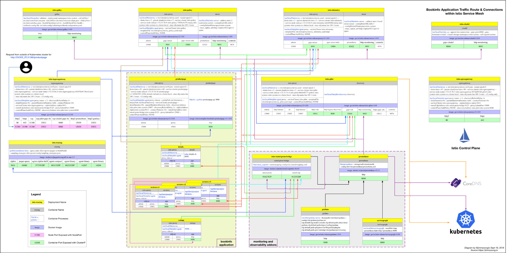
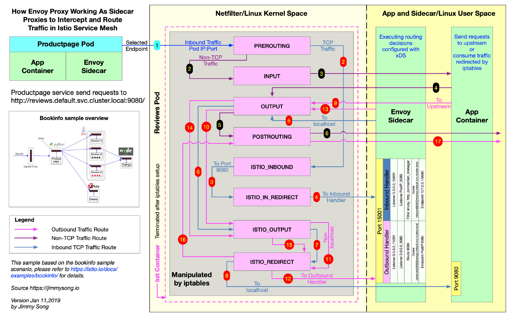

This article uses Istio’s official bookinfo example to explain how Envoy performs routing forwarding after the traffic entering the Pod and forwarded to Envoy sidecar by iptables, detailing the inbound and outbound processing. For a detailed analysis of traffic interception, see Understanding Envoy Sidecar Proxy Injection and Traffic Interception in Istio Service Mesh .
The following is a request flow diagram for bookinfo officially provided by Istio, assuming that the DestinationRule is not configured in all services of the bookinfo application.

Below is an overview of the steps from Sidecar injection, Pod startup to Sidecar proxy interception traffic and Envoy processing routing.
1. Kubernetes automatically injected through Admission Controller, or the user run istioctl command to manually inject sidecar container.
2. Apply the YAML configuration deployment application. At this time, the service creation configuration file received by the Kubernetes API server already includes the Init container and the sidecar proxy.
3. Before the sidecar proxy container and application container are started, the Init container started firstly. The Init container is used to set iptables (the default traffic interception method in Istio, and can also use BPF, IPVS, etc.) to Intercept traffic entering the pod to Envoy sidecar Proxy. All TCP traffic (Envoy currently only supports TCP traffic) will be Intercepted by sidecar, and traffic from other protocols will be requested as originally.
4. Launch the Envoy sidecar proxy and application container in the Pod. For the process of this step, please refer to the complete configuration through the management interface .
Sidecar proxy and application container startup order issues
Start the sidecar proxy and the application container. Which container is started first? Normally, Envoy Sidecar and the application container are all started up before receiving traffic requests. But we can’t predict which container will start first, so does the container startup order have an impact on Envoy hijacking traffic? The answer is yes, but it is divided into the following two situations.
Case 1: The application container starts first, and the sidecar proxy is still not ready
In this case, the traffic is transferred to the 15001 port by iptables, and the port is not monitored in the Pod. The TCP link cannot be established and the request fails.
Case 2: Sidecar starts first, the request arrives and the application is still not ready
In this case, the request will certainly fail. As for the step at which the failure begins, the reader is left to think.
Question : If adding a readiness and living probe for the sidecar proxy and application container can solve the problem?
5. TCP requests that are sent or received from the Pod will be hijacked by iptables. After the inbound traffic is hijacked, it is processed by the Inbound Handler and then forwarded to the application container for processing. The outbound traffic is hijacked by iptables and then forwarded to the Outbound Handler for processing. Upstream and Endpoint.
6. Sidecar proxy requests Pilot to use the xDS protocol to synchronize Envoy configurations, including LDS, EDS, CDS, etc., but to ensure the order of updates, Envoy will use ADS to request configuration updates from Pilot directly.
The following figure shows a productpageservice access request http://reviews.default.svc.cluster.local:9080/, when traffic enters reviews the internal services, reviews internal services Envoy Sidecar is how to do traffic blocked the route forward. The original image can be downloaded on Google Drive .

Before the first step, productpage Envoy Sidecar Pod has been selected by EDS of a request to reviews a Pod service of its IP address, it sends a TCP connection request.
The Envoy configuration in the official website of Istio is to describe the process of Envoy doing traffic forwarding. The party considering the traffic of the downstream is to receive the request sent by the downstream. You need to request additional services, such as reviews service requests need Pod ratings service.
reviews, there are three versions of the service, there is one instance of each version, three versions sidecar similar working steps, only to later reviews-v1-cb8655c75-b97zc Sidecar flow Pod forwarding this step will be described.
The role of the inbound handler is to transfer the traffic from the downstream intercepted by iptables to localhost to establish a connection with the application container inside the Pod.
Look reviews-v1-cb8655c75-b97zc at the Listener in the pod.
Run istioctl pc listener reviews-v1-cb8655c75-b97zc to see what the Pod has a Listener.
ADDRESS PORT TYPE
172.33.3.3 9080 HTTP <--- Receives all inbound traffic on 9080 from listener 0.0.0.0_15001
10.254.0.1 443 TCP <--+
10.254.4.253 80 TCP |
10.254.4.253 8080 TCP |
10.254.109.182 443 TCP |
10.254.22.50 15011 TCP |
10.254.22.50 853 TCP |
10.254.79.114 443 TCP |
10.254.143.179 15011 TCP |
10.254.0.2 53 TCP | Receives outbound non-HTTP traffic for relevant IP:PORT pair from listener 0.0.0.0_15001
10.254.22.50 443 TCP |
10.254.16.64 42422 TCP |
10.254.127.202 16686 TCP |
10.254.22.50 31400 TCP |
10.254.22.50 8060 TCP |
10.254.169.13 14267 TCP |
10.254.169.13 14268 TCP |
10.254.32.134 8443 TCP |
10.254.118.196 443 TCP <--+
0.0.0.0 15004 HTTP <--+
0.0.0.0 8080 HTTP |
0.0.0.0 15010 HTTP |
0.0.0.0 8088 HTTP |
0.0.0.0 15031 HTTP |
0.0.0.0 9090 HTTP |
0.0.0.0 9411 HTTP | Receives outbound HTTP traffic for relevant port from listener 0.0.0.0_15001
0.0.0.0 80 HTTP |
0.0.0.0 15030 HTTP |
0.0.0.0 9080 HTTP |
0.0.0.0 9093 HTTP |
0.0.0.0 3000 HTTP |
0.0.0.0 8060 HTTP |
0.0.0.0 9091 HTTP <--+
0.0.0.0 15001 TCP <--- Receives all inbound and outbound traffic to the pod from IP tables and hands over to virtual listener
As from productpage traffic arriving reviews Pods, downstream must clearly know the IP address of the Pod which is 172.33.3.3, so the request is 172.33.3.3:9080.
irtual Listener
As you can see from the Pod’s Listener list, the 0.0.0.0:15001/TCP Listener (the actual name is virtual) listens for all inbound traffic, and the following is the detailed configuration of the Listener.
{
"name": "virtual",
"address": {
"socketAddress": {
"address": "0.0.0.0",
"portValue": 15001
}
},
"filterChains": [
{
"filters": [
{
"name": "envoy.tcp_proxy",
"config": {
"cluster": "BlackHoleCluster",
"stat_prefix": "BlackHoleCluster"
}
}
]
}
],
"useOriginalDst": true
}
UseOriginalDst : As can be seen from the configuration in useOriginalDstthe configuration as specified true, which is a Boolean value, the default is false, using iptables redirect connections, the proxy may receive port original destination address is not the same port, thus received at the proxy port It is 15001 and the original destination port is 9080. When this flag is set to true, the Listener redirects the connection to the Listener associated with the original destination address, here 172.33.3.3:9080. Listener If no relationship to the original destination address, the connection processing by the Listener to receive it, i.e. the virtualListener, after envoy.tcp_proxyforwarded to a filter process BlackHoleCluster, as the name implies, when no matching Envoy virtual listener when the effect of Cluster , will send the request to it and return 404. This will be referred to below Listener provided bindToPortechoes.
Note : This parameter will be discarded, please use the Listener filter of the original destination address instead. The main purpose of this parameter is: Envoy listens to the 15201 port to intercept the traffic intercepted by iptables via other Listeners instead of directly forwarding it. See the Virtual Listener for details .
Listener 172.33.3.3_9080
As mentioned above, the traffic entering the inbound handler is virtual transferred to the 172.33.3.3_9080 Listener by the Listener. We are looking at the Listener configuration.
Run istioctl pc listener reviews-v1-cb8655c75-b97zc --address 172.33.3.3 --port 9080 -o json view.
[{
"name": "172.33.3.3_9080",
"address": {
"socketAddress": {
"address": "172.33.3.3",
"portValue": 9080
}
},
"filterChains": [
{
"filterChainMatch": {
"transportProtocol": "raw_buffer"
},
"filters": [
{
"name": "envoy.http_connection_manager",
"config": {
...
"route_config": {
"name": "inbound|9080||reviews.default.svc.cluster.local",
"validate_clusters": false,
"virtual_hosts": [
{
"domains": [
"*"
],
"name": "inbound|http|9080",
"routes": [
{
...
"route": {
"cluster": "inbound|9080||reviews.default.svc.cluster.local",
"max_grpc_timeout": "0.000s",
"timeout": "0.000s"
}
}
]
}
]
},
"use_remote_address": false,
...
}
}
]，
"deprecatedV1": {
"bindToPort": false
}
...
},
{
"filterChainMatch": {
"transportProtocol": "tls"
},
"tlsContext": {...
},
"filters": [...
]
}
],
...
}]
bindToPort : Note that there are a bindToPortconfiguration that is false, the default value of the configuration true, showing Listener bind to the port, set here to false the process flow can Listener Listener transferred from the other, i.e., above said virtual Listener, where we see filterChains.filters in the envoy.http_connection_manager configuration section:
"route_config": {
"name": "inbound|9080||reviews.default.svc.cluster.local",
"validate_clusters": false,
"virtual_hosts": [
{
"domains": [
"*"
],
"name": "inbound|http|9080",
"routes": [
{
...
"route": {
"cluster": "inbound|9080||reviews.default.svc.cluster.local",
"max_grpc_timeout": "0.000s",
"timeout": "0.000s"
}
}
]
}
]
}
This configuration indicates that traffic will be handed off to the Cluster for inbound|9080||reviews.default.svc.cluster.local processing.
Cluster inbound|9080||reviews.default.svc.cluster.local
Run istioctl pc cluster reviews-v1-cb8655c75-b97zc --fqdn reviews.default.svc.cluster.local --direction inbound -o json to see the Cluster configuration is as follows.
[
{
"name": "inbound|9080||reviews.default.svc.cluster.local",
"connectTimeout": "1.000s",
"hosts": [
{
"socketAddress": {
"address": "127.0.0.1",
"portValue": 9080
}
}
],
"circuitBreakers": {
"thresholds": [
{}
]
}
}
]
You can see that the Endpoint of the Cluster directly corresponds to localhost, and then the traffic is forwarded by the application container after iptables.
Because the reviews will to ratings send an HTTP request service, request address are: http://ratings.default.svc.cluster.local:9080/ the role of Outbound handler is to intercept traffic to iptables to native applications sent via Envoy to determine how to route to the upstream.
The request sent by the application container is outbound traffic. After being hijacked by iptables, it is transferred to the Envoy Outbound handler for processing, then passed through virtual Listener and 0.0.0.0_9080 Listener, and then finds the cluster of upstream through Route 9080, and then finds Endpoint through EDS to perform routing action. This section can refer to the Envoy depth configuration resolution in the official Istio website .
Route 9080
reviews requests ratings service, run istioctl proxy-config routes reviews-v1-cb8655c75-b97zc --name 9080 -o json view route configuration because Envoy VirtualHost will be matched according to HTTP header of domains, so the following list only ratings.default.svc.cluster.local:9080 this one VirtualHost.
[{
"name": "ratings.default.svc.cluster.local:9080",
"domains": [
"ratings.default.svc.cluster.local",
"ratings.default.svc.cluster.local:9080",
"ratings",
"ratings:9080",
"ratings.default.svc.cluster",
"ratings.default.svc.cluster:9080",
"ratings.default.svc",
"ratings.default.svc:9080",
"ratings.default",
"ratings.default:9080",
"10.254.234.130",
"10.254.234.130:9080"
],
"routes": [
{
"match": {
"prefix": "/"
},
"route": {
"cluster": "outbound|9080||ratings.default.svc.cluster.local",
"timeout": "0.000s",
"maxGrpcTimeout": "0.000s"
},
"decorator": {
"operation": "ratings.default.svc.cluster.local:9080/*"
},
"perFilterConfig": {...
}
}
]
},
..]
You can see the routing of traffic to the Cluster from this Virtual Host configuration outbound|9080||ratings.default.svc.cluster.local.
Endpoint outbound|9080||ratings.default.svc.cluster.local
Istio 1.1 previous versions do not support the use of istioctl commands to directly query Endpoint Cluster, you can use the debug queries Pilot endpoint way compromise.
kubectl exec reviews-v1-cb8655c75-b97zc -c istio-proxy curl http://istio-pilot.istio-system.svc.cluster.local:9093/debug/edsz > endpoints.json
endpoints.json file contains all the Endpoint information of the Cluster, and we only select outbound|9080||ratings.default.svc.cluster.local the results of the Cluster as follows.
{
"clusterName": "outbound|9080||ratings.default.svc.cluster.local",
"endpoints": [
{
"locality": {
},
"lbEndpoints": [
{
"endpoint": {
"address": {
"socketAddress": {
"address": "172.33.100.2",
"portValue": 9080
}
}
},
"metadata": {
"filterMetadata": {
"istio": {
"uid": "kubernetes://ratings-v1-8558d4458d-ns6lk.default"
}
}
}
}
]
}
]
}
The Endpoint can be one or more, and Envoy will route it according to certain rules by selecting the appropriate Endpoint.
Note : Istio 1.1 will support the istioctl pc endpoint command to query Endpoint.